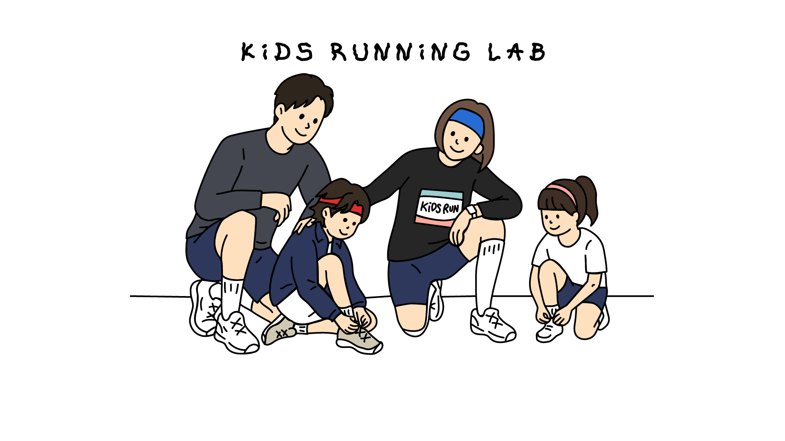

AI 사각지대에 있는 엄마들이 모입니다. 차 한 잔과 다큐 한 편으로 90분, 세상의 변화를 우리 식으로 풀어 봅니다.
첫 자리, 동그랗게 앉아 90분.
한 마디로 우리가 무엇을 향해 가고 있는지.
아이가 살아갈 세상은 5년 뒤에 완전히 바뀌어요. 엄마가 "재밌네!"하면 아이도 따라오고, 엄마가 두려워하면 아이도 도망쳐요.
오늘 차 한 잔의 시간이 그 차이를 만듭니다.
최신 모임이 위쪽. 같이 보면 좋아요.